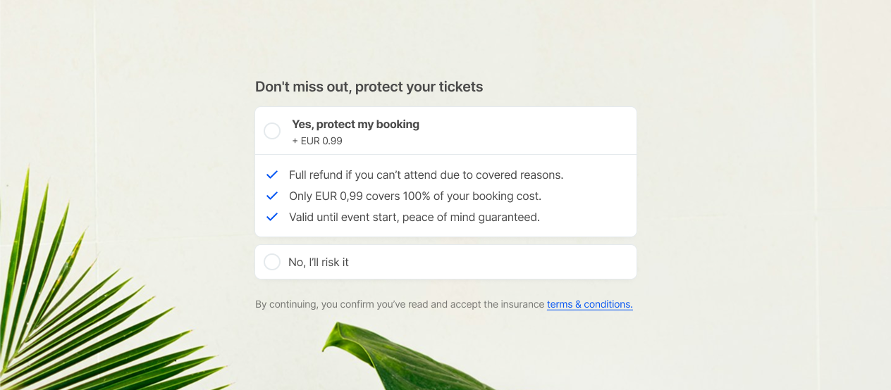
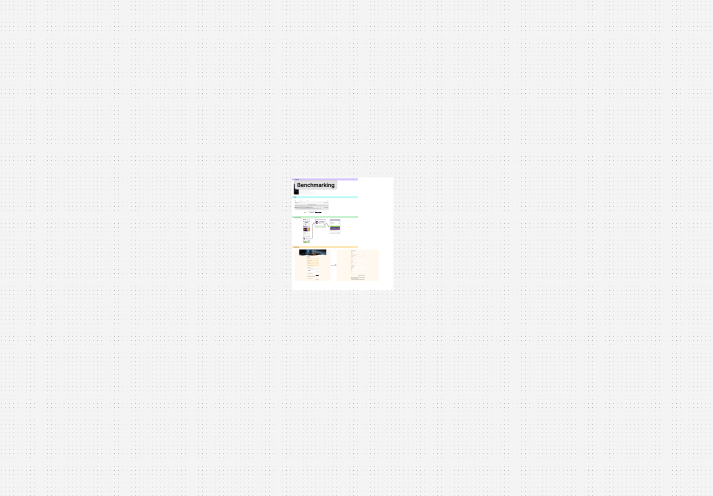
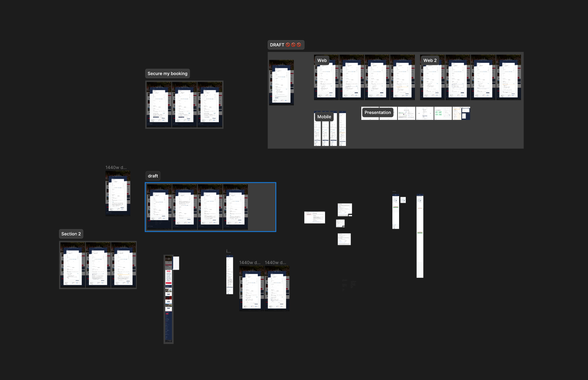
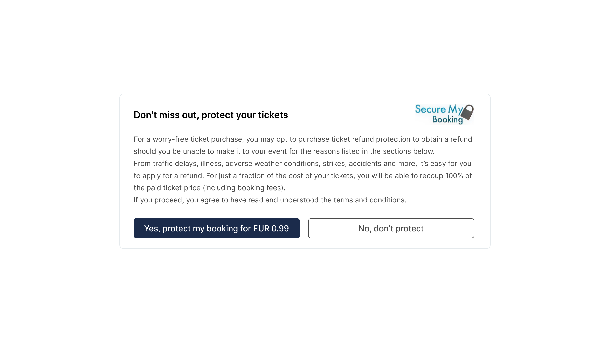
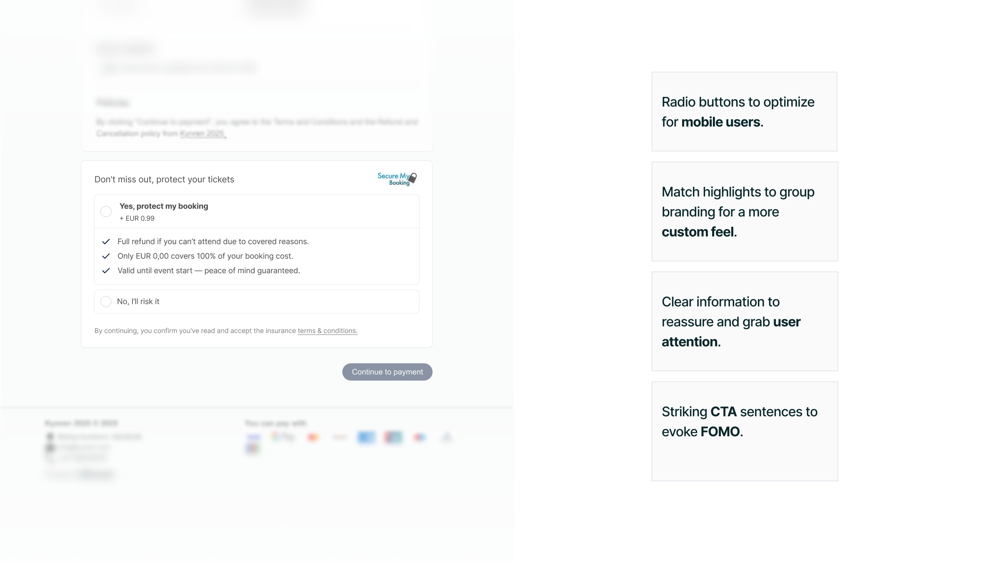
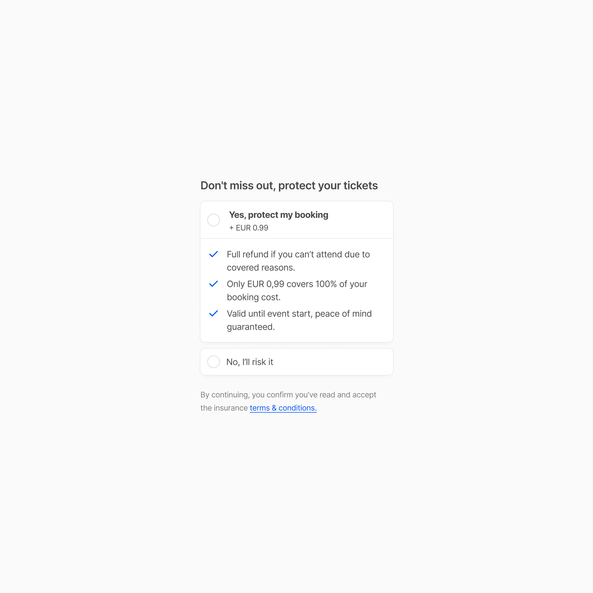
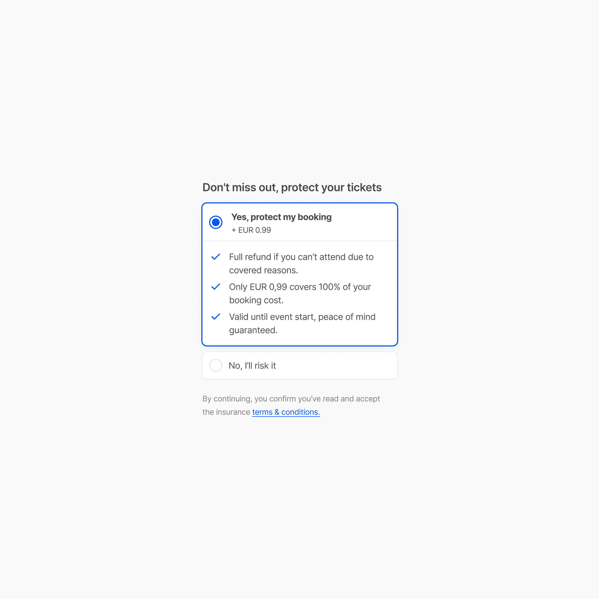
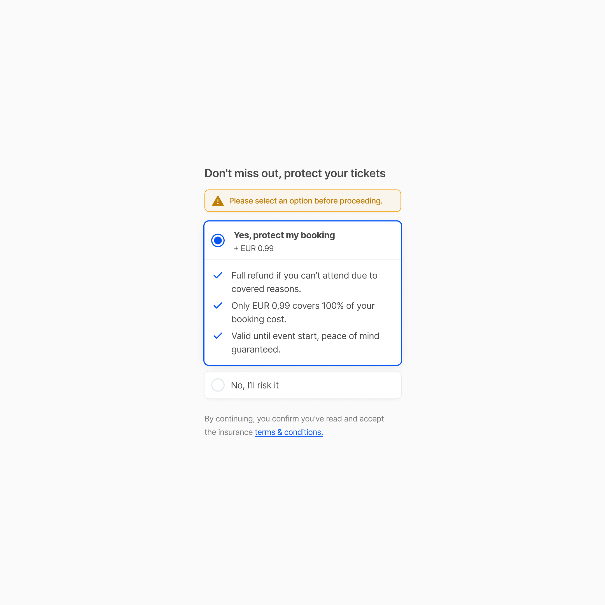

Scroll to zoom · Click to close
Integrating a ticket-refund insurance component into Smeetz's booking widget — making it seamless, trustworthy, and easy to act on. دمج مكوّن تأمين على استرداد تذاكر الرحلات في نافذة حجز Smeetz — بشكل سلس وموثوق وسهل التفاعل معه.

11Arches is a registered charity based in Bishop Auckland, best known for operating Kynren, a large-scale, live-action open-air show. They are one of Smeetz's key clients. In the most recent year, the charity reported an annual total gross income of approximately £10.47 million. 11Arches منظمة خيرية مسجّلة مقرّها Bishop Auckland، تشتهر بتشغيل Kynren، وهو عرض مفتوح الهواء واسع النطاق. يُعدّون من أبرز عملاء Smeetz. في آخر سنة مالية، سجّلت المنظمة إجمالي دخل سنوي بلغ ما يقارب £10.47 مليون.
I collaborated closely with Lydia, our Product Manager at Smeetz. She led the ideation and research phase, with minor contributions from my side as I was focusing on other ongoing tasks. Once the direction was defined, I took ownership of the wireframing and design, sharing iterative options and refinements with her throughout the process. Together, we prepared and presented the solution to the stakeholders, gathered their feedback, and aligned on the next steps. تعاونت بشكل وثيق مع ليديا، مديرة المنتجات في Smeetz. قادت هي مرحلة التخيّل والبحث، بمساهمات بسيطة من جانبي نظرًا لانشغالي بمهام أخرى. بمجرد تحديد الاتجاه، تولّيت ملكية التصميم والصياغة التكرارية، وتشاركتها معها طوال العملية. معًا، قدّمنا الحل للمعنيين، جمعنا ملاحظاتهم، وتوافقنا على الخطوات التالية.
11Arches partners with an insurance provider, Secure My Booking, which enables them to generate additional revenue by offering customers an optional ticket-refund guarantee. If an attendee is unable to attend the event, they can request a refund directly through the insurer according to the agency's policy. تتعاون 11Arches مع مزوّد تأمين هو Secure My Booking، الذي يمكّنهم من توليد إيرادات إضافية بتقديم ضمان استرداد اختياري للتذاكر. إن تعذّر على الحاضر الحضور، يمكنه طلب الاسترداد مباشرةً عبر شركة التأمين وفق بوليصة الوكالة.
At Smeetz, this feature was not yet supported in our booking widget, so our goal was to design and implement this new component. We needed to integrate it seamlessly into the user experience, ensuring it was clear, accessible, and easy for customers to understand and use. في Smeetz، لم تكن هذه الميزة مدعومة بعد في نافذة الحجز، لذا كان هدفنا تصميم وتنفيذ هذا المكوّن الجديد. احتجنا إلى دمجه بسلاسة في تجربة المستخدم، بضمان أن يكون واضحًا ومتاحًا وسهل الفهم والاستخدام.
We didn't have the opportunity to run deep UX research for this feature. The insurance component was a priority request from the client and needed to be delivered quickly. Because of this, Lydia and I agreed on a pragmatic approach: conducting a benchmark of well-known booking flows that already include insurance options. لم تتح لنا الفرصة لإجراء بحث UX معمّق لهذه الميزة. كان المكوّن التأميني طلبًا ذا أولوية من العميل ويجب تسليمه سريعًا. لذا، اتّفقنا أنا وليديا على نهج براغماتي: إجراء قياس مرجعي لتدفقات حجز معروفة تتضمّن خيارات تأمين بالفعل.
This approach helped us achieve two key goals:ساعدنا هذا النهج على تحقيق هدفَين رئيسيَّين:


There was a lot of back-and-forth between me and the Product Manager on how to introduce the insurance component into the existing booking flow. Since the team had been stable and in place for years, taking an overly creative or disruptive approach could have slowed down development and increased technical complexity. جرى كثير من النقاش بيني وبين مديرة المنتجات حول كيفية إدخال مكوّن التأمين في تدفق الحجز القائم. بما أن الفريق كان مستقرًّا منذ سنوات، كان النهج الإبداعي المفرط أو التخريبي قد يُبطئ التطوير ويزيد التعقيد التقني.
Our challenge was to balance design clarity with technical feasibility, integrating the feature in a way that felt natural to users while allowing the engineering team to deliver it quickly and safely. كان تحدّينا هو الموازنة بين وضوح التصميم والجدوى التقنية، بدمج الميزة بأسلوب طبيعي للمستخدمين مع إتاحة المجال للفريق الهندسي لتسليمها بسرعة وأمان.

In the first iteration, we introduced the insurance component directly into the booking flow. However, after presenting it to internal stakeholders, we identified a usability concern: the booking flow already relies on a primary Continue CTA, and adding two additional buttons created too many competing actions. This increased cognitive load and made the selection less clear, potentially impacting decision-making and flow completion. في التكرار الأول، أدرجنا مكوّن التأمين مباشرةً في تدفق الحجز. لكن بعد تقديمه للمعنيين الداخليين، رصدنا مشكلة في سهولة الاستخدام: يعتمد التدفق بالفعل على زر Continue رئيسي، وإضافة زرَّين إضافيَّين أفرز منافسةً على الانتباه، مما رفع العبء المعرفي وجعل الاختيار أقل وضوحًا.

We returned to benchmarking, this time focusing on a large, well-established company with an insurance component already integrated into its booking flow. Although this example came from outside the leisure and entertainment industry, it provided a strong, proven pattern. عدنا إلى المقارنة المرجعية، هذه المرة مع شركة كبيرة وراسخة تملك مكوّن تأمين مدمجًا في تدفق حجزها. وعلى الرغم من أن المثال جاء من خارج قطاع الترفيه، فقد قدّم نمطًا قويًا ومُثبتًا.
From this analysis, we restructured the insurance feature as a clear selection component with two options. The recommended option was supported with additional context, descriptive copy, and informative details to help users understand the value and confidently make a decision. بناءً على هذا التحليل، أعدنا هيكلة ميزة التأمين كـمكوّن اختيار واضح بخيارَين. الخيار الموصى به مدعوم بـسياق إضافي ونسخة وصفية ومعلومات مفيدة تساعد المستخدمين على فهم القيمة واتخاذ القرار بثقة.
Another small but impactful contribution I made was supporting the marketing of this feature. I designed the visual component used in the newsletter sent to our clients whenever a new feature is released, while the copy was provided by the Product Manager. This helped ensure a consistent, visually engaging presentation of the new insurance option. مساهمة أخرى صغيرة لكن ذات أثر: دعمت تسويق هذه الميزة. صمّمت المكوّن البصري المستخدم في النشرة البريدية المُرسَلة لعملائنا عند إطلاق كل ميزة جديدة، فيما قدّمت مديرة المنتجات النص. ساهم ذلك في ضمان تقديم متسق وجذّاب بصريًا لخيار التأمين الجديد.



Scroll to zoom · Click to close